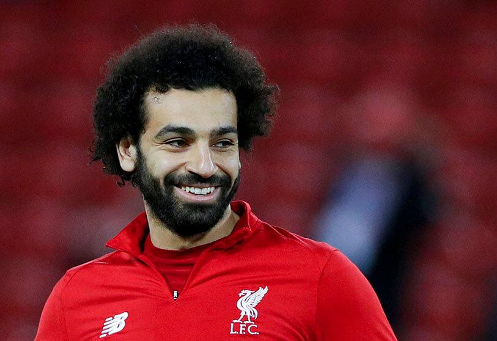
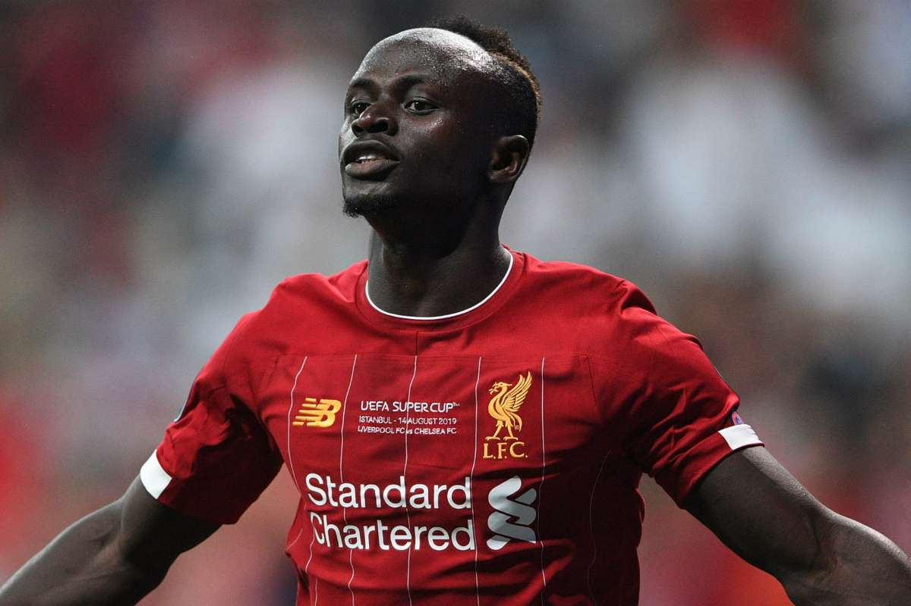
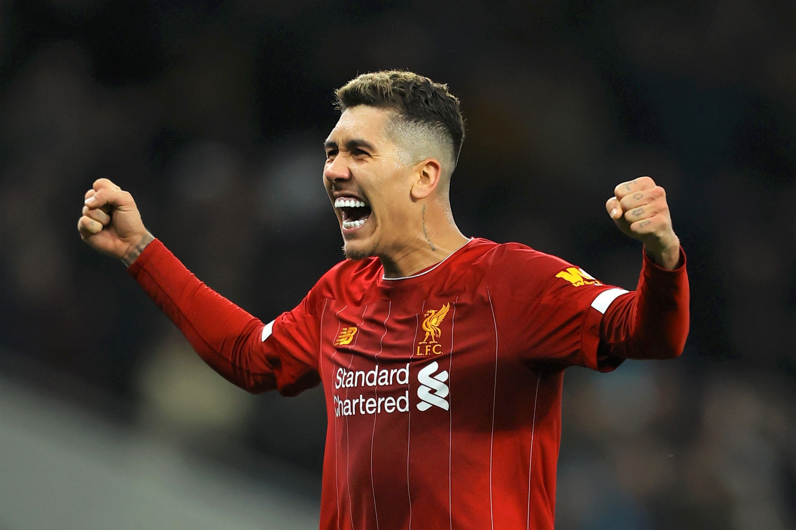

Egipski piłkarz występujący na pozycji pomocnika lub napastnika w angielskim klubie Liverpool FC oraz w reprezentacji Egiptu. Wychowanek El Mokawloon SC. W swojej karierze grał także w takich zespołach, jak FC Basel, Chelsea FC, ACF Fiorentina czy AS Roma.

Senegalski piłkarz występujący na pozycji skrzydłowego w angielskim klubie Liverpool oraz w reprezentacji Senegalu.

Brazylijski piłkarz grający na pozycji pomocnika lub napastnika w Liverpool F.C. i reprezentacji Brazylii.
Autor strony: Mateusz Kuchta